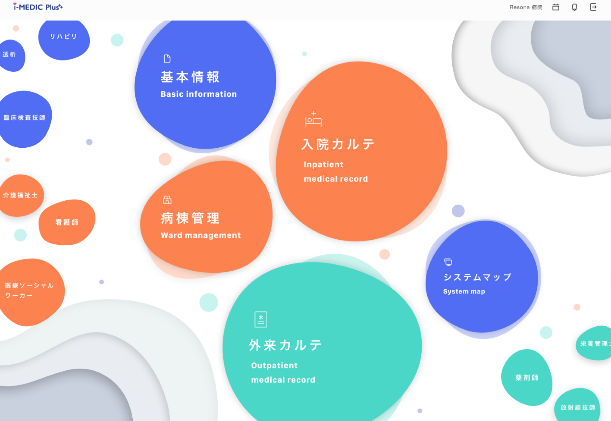

Work Detail
医療従事者向けサービス：業務APP
医療サービスアプリの改修デザインの提案を行った。
一つの医療機関だけでなく、様々な医療機関がクラウド上で、一人の患者のデータを共有できるというクラウド型電子カルテのサービスになります。
クライアントからは、デザインとしての新しさと情報のみやすさを要求された。
担当：
期間：
ツール：
情報設計、UI/UXデザイン
2021年8月末 〜 9月
Figma

Design Problem & Solution
Problem
既存のものには、ビジュアル的にコンセプトがなかったのでそこを考える必要があった。
Solution
このサービスでは、様々な医療機関がクラウド上で、一人の患者のデータを共有しているということが特徴的だと思った。そのため、いろんな人たちが輪になって関わっているということを、UIで表現した。

デザインを見てみると、真ん中に医者が使う機能を集め、周りには他に関わっている役職が散りばめられている。
このようなデザインにすることで、日々働く中で「自分たちだけでなく、他の職種の人たちも関わっているんだな」とユーザーに感じていただけるようなデザインになっている。
「多様な医療機関」をカラフルさで表現していますが、業務サービスであることを考え、白ベースの背景と最小限でカラフルにすることで、視界を遮ることなく機能的にしている。
Information Problem & Solution
Problem
業務サービスである以上、コンセプトを表現するだけでなく機能的にする必要があった。
Solution
Top画面では、医者が使用できる機能は中央に集め、大きく配置し、一方で、医者が使用できないものは、中央から遠くに配置し、文字サイズ含め小さくしている。中央にある使用できる機能と画面端にあるそうでない機能の間には、大きな余白があるのでユーザーは、ぱっと見で使用できる機能と使用できない機能を認識することができるようになっている。
また、使用できる機能には「アイコン」や「飾り」「英文字」を追加することで、使用できない機能と見た目の部分で差別化を図っている。
ヘッダーのカレンダーアイコン、お知らせアイコンを押すと画面右からスライドインします。 それぞれ、カレンダーアイコンを押すと本日のスケジュールが出て、お知らせアイコンを押すとお知らせ一覧が出ます。どちらの画面も業務的な画面になるので、機能面を重視しグラフィックは控えめになっています。
ヘッダーのカレンダーアイコン、お知らせアイコンを押すと画面右からスライドインします。 それぞれ、カレンダーアイコンを押すと本日のスケジュールが出て、お知らせアイコンを押すとお知らせ一覧が出ます。どちらの画面も業務的な画面になるので、機能面を重視しグラフィックは控えめになっています。
スケジュールの画面では、日付を押すと別の日付を選択することができるので、ユーザーは別日のスケジュール確認のためにスケジュール一覧ページに遷移せずとも確認することができる。また、現在の時刻が紫に色付けされることでユーザーは、直感的に現在時刻が認識できるようになっている。
お知らせの画面では、何件の新着があるかをタイトルの横に表示し、かつ新着のお知らせには”NEW”の文字を付けることで、ユーザーが新着のお知らせを見逃さないようにデザインした。